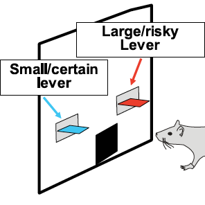
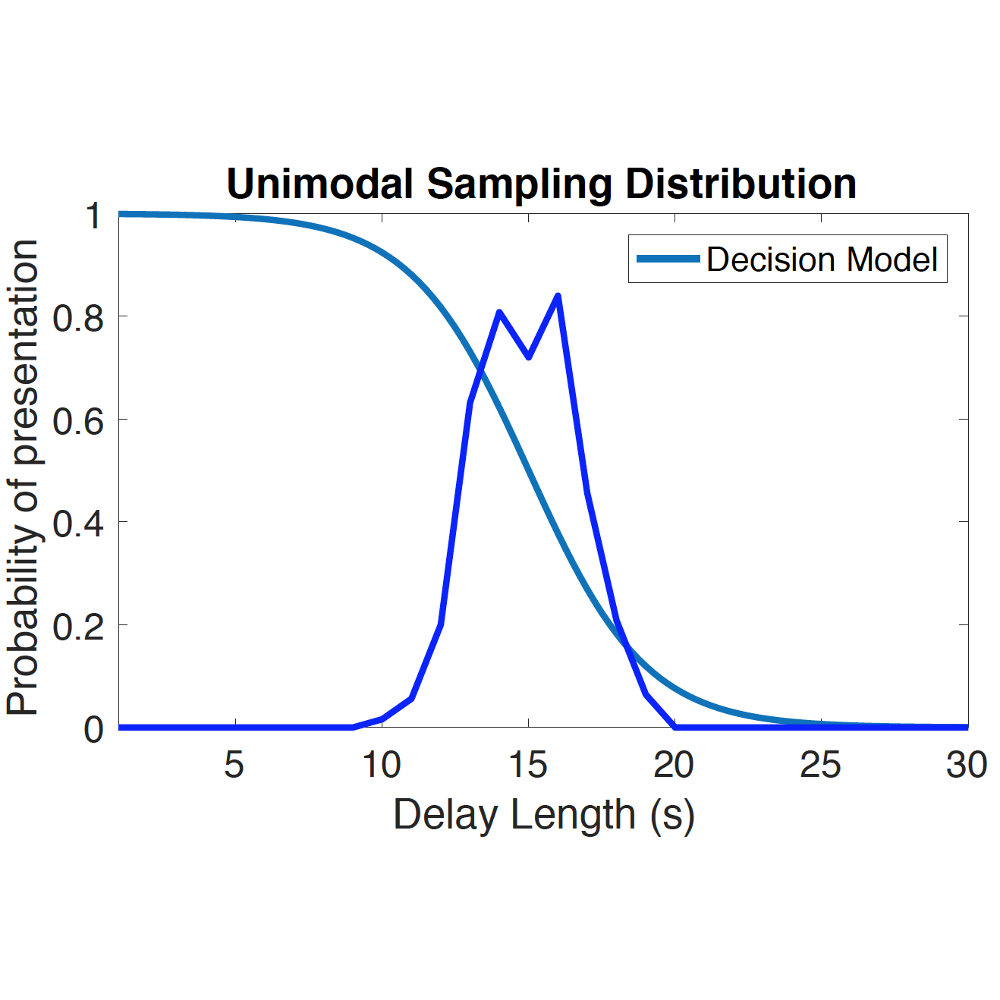

Home
Projects
GitHub
Projects

Characterizing mPFC/BLA activity in rats under non-stationary stochastic reward
Poster (CAN 2018)

How over interpretation of simple behavioral models can lead to unexpected results: In search of the optimal sampling distributions for delay values on the Restaurant Row Task
Poster